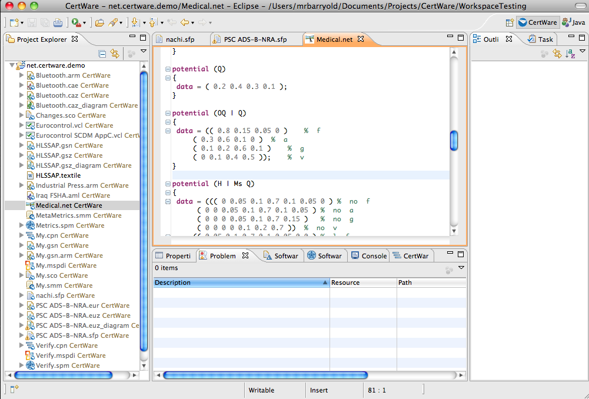

References
- Documents
- Hugin API Reference Manual, Version 7.4, Hugin Expert A/S, 2010
- Sensitivity Analysis, Modeling, Inference and More, (SamIam), Automated Reasoning Group, Computer Science Department, UCLA.
Hugin Networks
A Hugin Network here is a network file describing a problem to be solved with Bayesian reasoning. Hugin is a popular Bayesian modeling and inference engine from Hugin Expert. From the Hugin API manual:
The HUGIN API contains a high performance inference engine that can be used as the core of knowledge based systems built using Bayesian belief networks or “limited memory” influence diagrams (LIMIDs). A knowledge engineer can build knowledge bases that model the application domain, using probabilistic descriptions of causal relationships in the domain. Given this description, the HUGIN inference engine can perform fast and accurate reasoning.
In CertWare we do not use the commercial Hugin inference engine, but rather we use a publicly-available sensitivity analysis and inference engine called SamIam from the UCLA Computer Science department (see the reference at the left). While SamIam can perform the Bayesian network computations using Hugin NET files as input, it is not intended as a complete replacement for Hugin. However, SamIam does support the probabilistic analyses that are most useful for safety cases, and can perform other tasks such as sensitivity analysis and value-of-information calculations. CertWare will add these tasks in the future.
CertWare represents the Hugin Network (NET) metamodel in a domain-specific language (DSL). The CertWare NET DSL implements nearly all of the NET grammar described in the Hugin API manual (see the references at left). The DSL implements syntax checking and some validation of content. More validation rules will be added in the future. To create a NET file, simply create a file with the extension .net or use the New File wizard and choose NET file.
The NET DSL editor is shown in the figure.
After the network model is complete, one can perform some Bayesian Reasoning queries on the network in the Network Analysis view.
Examples
When creating a new NET file in the workbench, CertWare populates the file with a template that shows most of the correct structure for a typical model. Use this template to edit the problem to be computed in the workbench.
See the evaluation license for legal terms regarding this software.